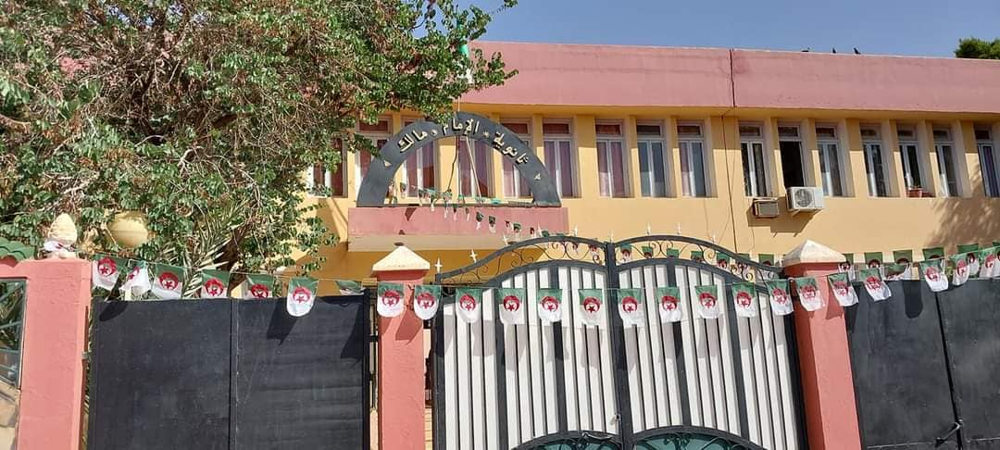
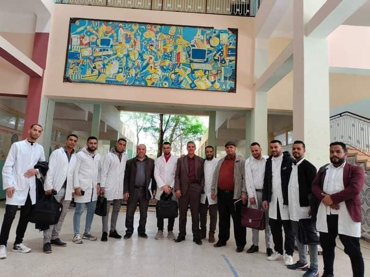
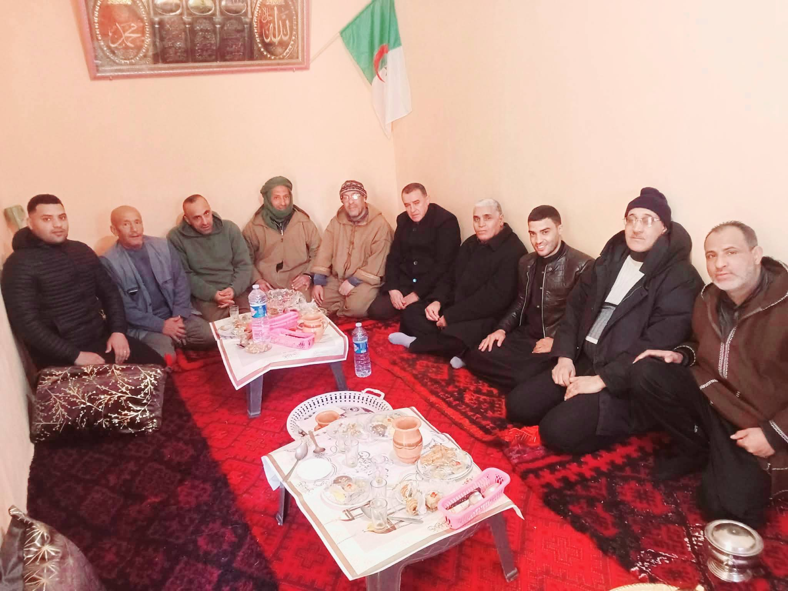
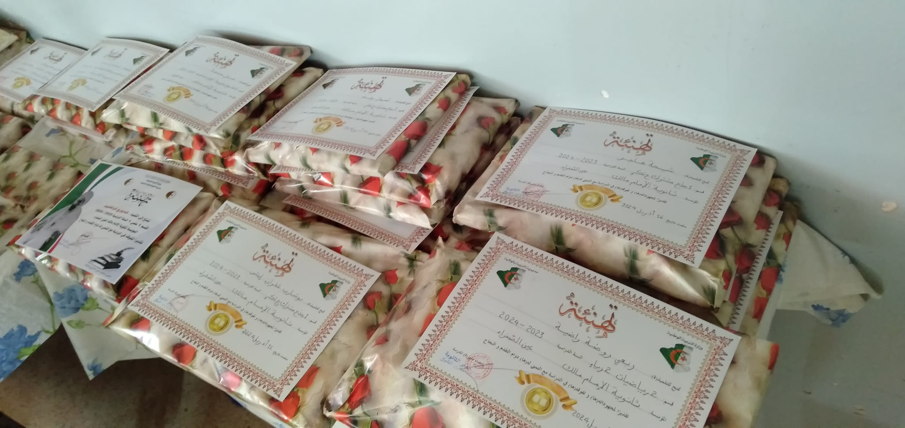
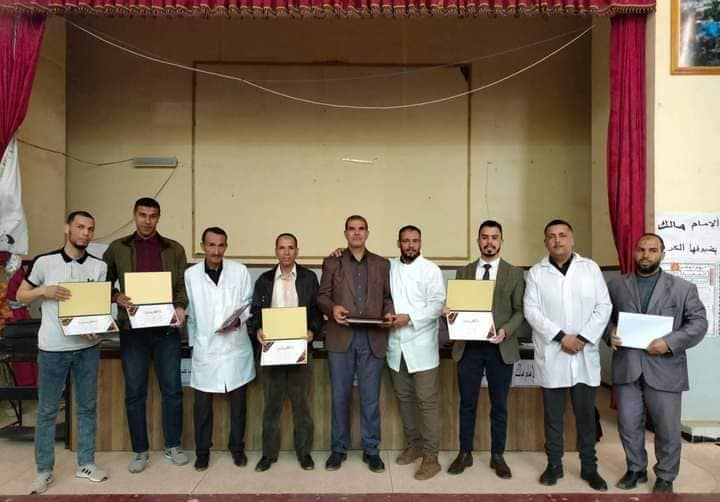
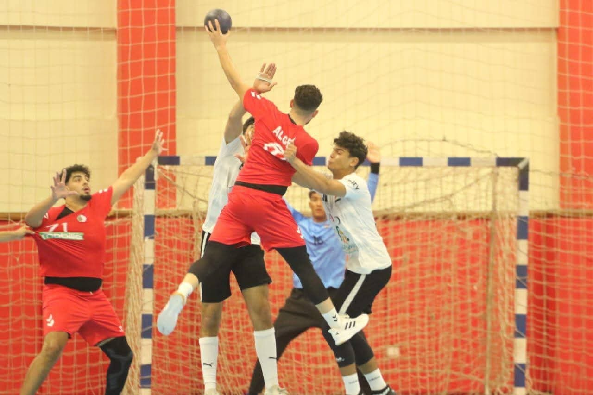
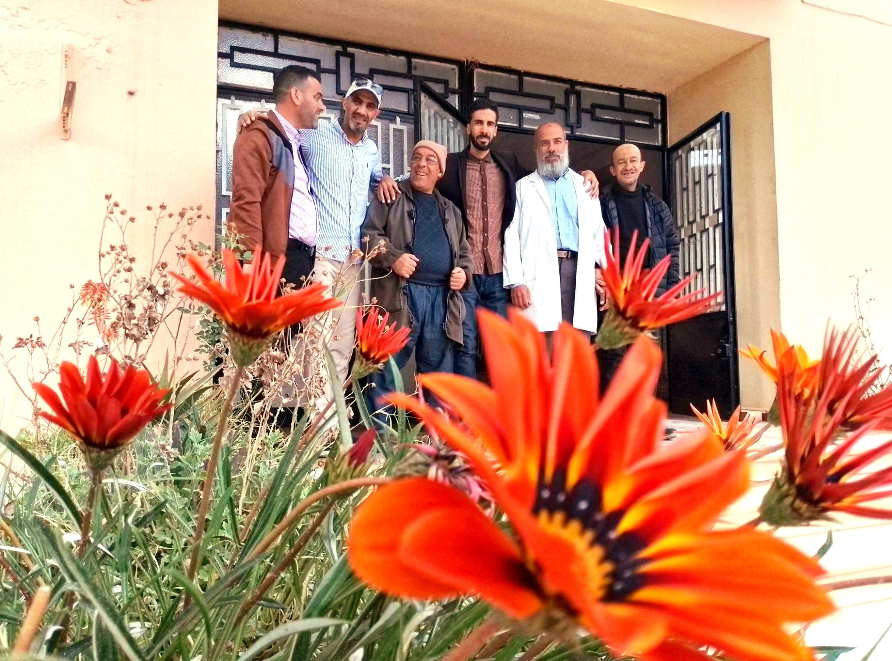
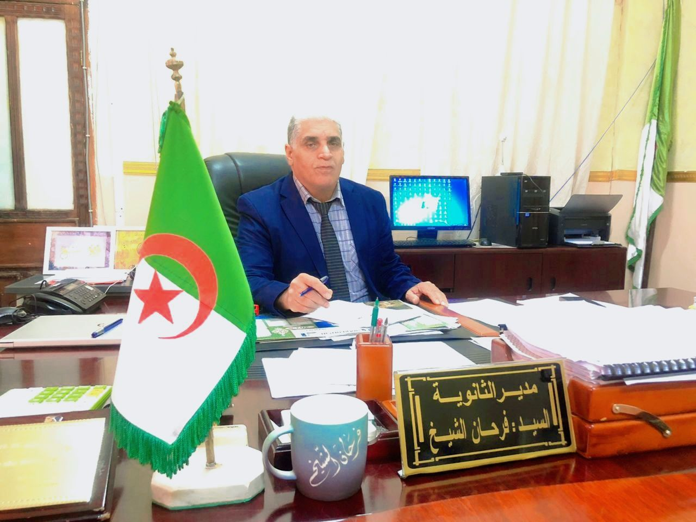

منارة العلم في العين الصفراء
تعتبر ثانوية الإمام مالك ببلدية العين الصفراء، ولاية النعامة، واحدة من أهم المؤسسات التربوية التي تخرج منها أجيال من الإطارات والكفاءات. نهدف دائماً إلى تقديم تعليم ذو جودة عالية في بيئة تربوية مثالية تساعد التلاميذ على الإبداع والتفوق الدراسي.



يضم **الطاقم الإداري والتربوي** لثانوية الإمام مالك نخبة من الأساتذة والمشرفين الأكفاء الذين يسخرون خبراتهم الطويلة لمرافقة التلاميذ. يتميز طاقمنا بالتفاني في العمل، والحرص على تطبيق أحدث المناهج التربوية لضمان نجاح أبنائنا.
يعمل الفريق بروح الأسرة الواحدة، حيث يتم التنسيق المستمر بين الإدارة والمدرسين لتذليل كافة الصعاب وتوفير المناخ المناسب للتحصيل العلمي.

نحرص على مكافأة تلاميذنا النجباء في كل مناسبة لتعزيز روح المنافسة الشريفة والاجتهاد.

ننظم لقاءات دورية تهدف إلى رفع معنويات التلاميذ وتوجيههم نحو الطرق الأفضل للمذاكرة والنجاح.

دعم المواهب الرياضية وتوفير المساحات اللازمة لممارسة الأنشطة البدنية.

الاعتناء بمحيط المؤسسة لتوفير راحة نفسية للأساتذة والتلاميذ على حد سواء.

"رسالتنا في ثانوية الإمام مالك هي بناء جيل مثقف وواعٍ. نحن هنا لخدمة التلاميذ وتوفير كل سبل النجاح لهم. أبوابنا مفتوحة دائماً لكل ما يخدم مصلحة التعليم في منطقتنا الغالية."